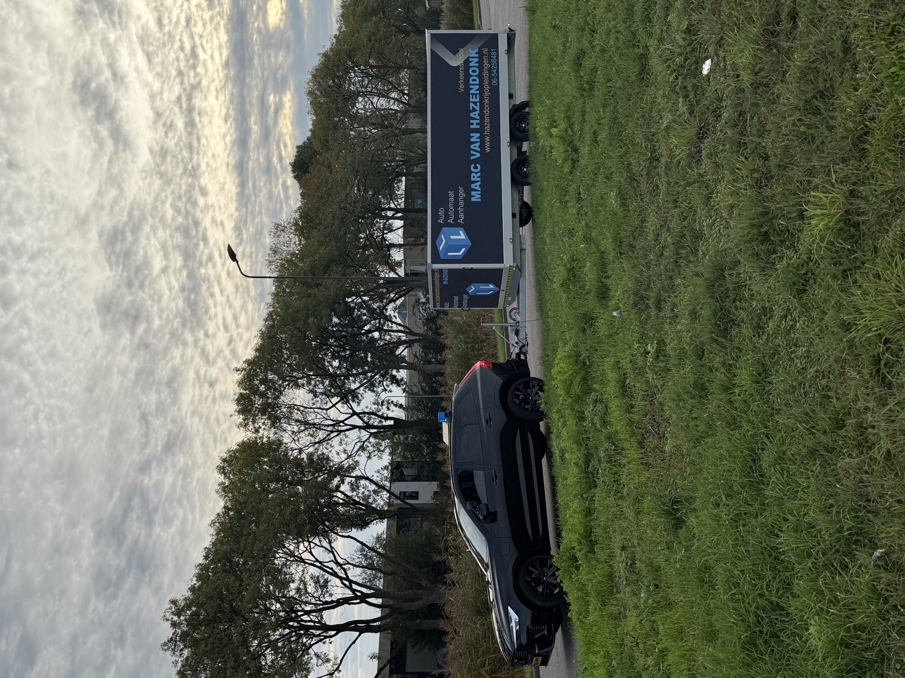

Rijles is een vak.
Marc tekent er al 36 jaar voor.
- Eén vakman, geen wisselende instructeurs
- Sinds februari 1990 naast leerlingen
- Pas naar het examen als je er klaar voor bent
Kies je route
Autorijbewijs B
Schakel of automaat, in een rustig tempo of als spoedcursus. Met een tussentijdse toets als vaste stap, zodat het examen geen verrassing is.
Bekijk de auto-opleiding Fig. 3 · Categorie BEAanhangerrijbewijs BE
Voor werk, caravan of trailer. Meestal twee dagdelen lessen en aansluitend examen. Leerlingen noemen het examen daarna een hoepeltje.
Bekijk het BE-trajectBij Marc ben je geen nummer
Eerlijk over waar je staat
Je hoort precies wat al goed gaat en wat nog niet. Niet om streng te doen, maar zodat je zonder verrassingen het examen in gaat.
Hij onthoudt de kleine dingen
Van je lastige kruispunt tot hoe je vorige les ging. Leerlingen schrijven het letterlijk in hun reviews: je bent hier geen nummer.
Elke vraag krijgt antwoord
Ook als je dezelfde vraag drie keer stelt. En ben je het ergens niet mee eens? Marc legt rustig uit waarom iets zo werkt in het verkeer.
Streng op de goede manier
Lief maar duidelijk, zodat de regels blijven hangen. Zo stap je in bij het CBR met het gevoel dat je het gewoon kunt.
"Er zijn tegenwoordig veel rijscholen die het voor het geld doen en niet voor de persoon zelf. Dat was hier totaal niet zo."
36 jaar, uitgetekend
De eerste rijles
Marc van Hazendonk begint als rijinstructeur. Rosmalen ziet er inmiddels anders uit, de aanpak niet: rustig, eerlijk en persoonlijk.
Alle tussentijdse toetsen gehaald
1.335 tussentijdse toetsen afgenomen, met een slagingspercentage van 100 procent. Bron: CBR-data via clickdrive.nl, augustus 2026.
Ruim 1.400 eerste praktijkexamens auto
Van faalangst tot eigenwijs: Marc heeft zo ongeveer elk type leerling naar het examen begeleid. Die kilometers ervaring stappen elke les mee in.
Plek voor jou op de tekening
Eén instructeur betekent bewust kiezen wie er les krijgt. Vraag een proefles aan en kijk of het klikt.
Aanhangerrijbewijs BE: de specialiteit van het huis

De echte lescombinatie · RosmalenCaravan achter de auto, trailer voor het werk of gewoon meer mogen trekken: bij Marc haal je je BE meestal in twee dagdelen, met aansluitend je examen. Onderschat het niet, er wordt echt inzicht gevraagd. Maar met 36 jaar ervaring naast je zit dat goed.
Aankoppelen en afkoppelenDe basis die je blind moet kunnen.
Keren op de weg en achteruit in een rechte lijnDe onderdelen waar het examen om draait.
Rijden met gevoel voor de combinatieLaten zien dat je begrijpt wat er achter je hangt.
Wat leerlingen tekenen bij de 5 sterren
Lees alle reviews 5,0 op Google · 11 reviews · bron clickdrive.nl
Rijles in Rosmalen, Den Bosch en de dorpen eromheen
Hazendonk Rijopleidingen rijdt vanuit de Cadansstraat in Rosmalen. Lessen starten bij jou thuis, op school of op je werk, overal in het werkgebied. Zo ken je straks precies de wegen, rotondes en examenroutes waar je ook echt examen doet.
- Rosmalen
- Den Bosch
- Empel
- Berlicum
- Hedel
- Velddriel
- Kerkdriel
- Engelen
- Vlijmen
- Maliskamp
- Den Dungen
- Ammerzoden
Eerst kijken of het klikt? Heel verstandig.
Plan een proefles of stel je vraag via WhatsApp. Marc antwoordt zelf, tussen de lessen door. Zo weet je meteen bij wie je straks in de auto zit.